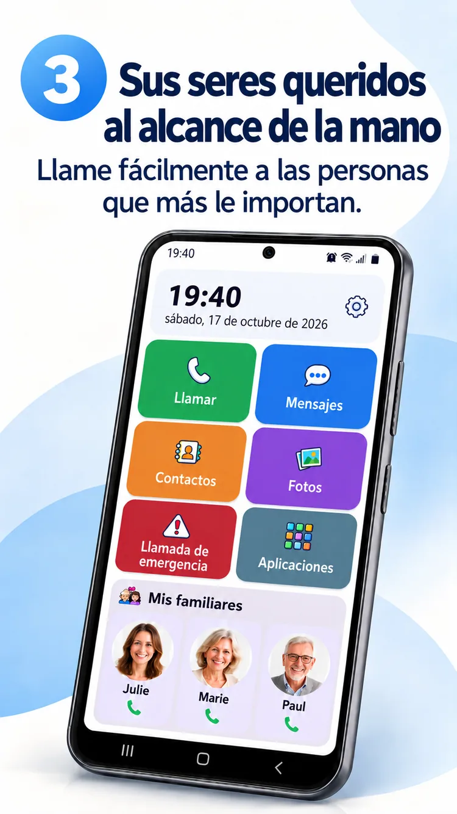
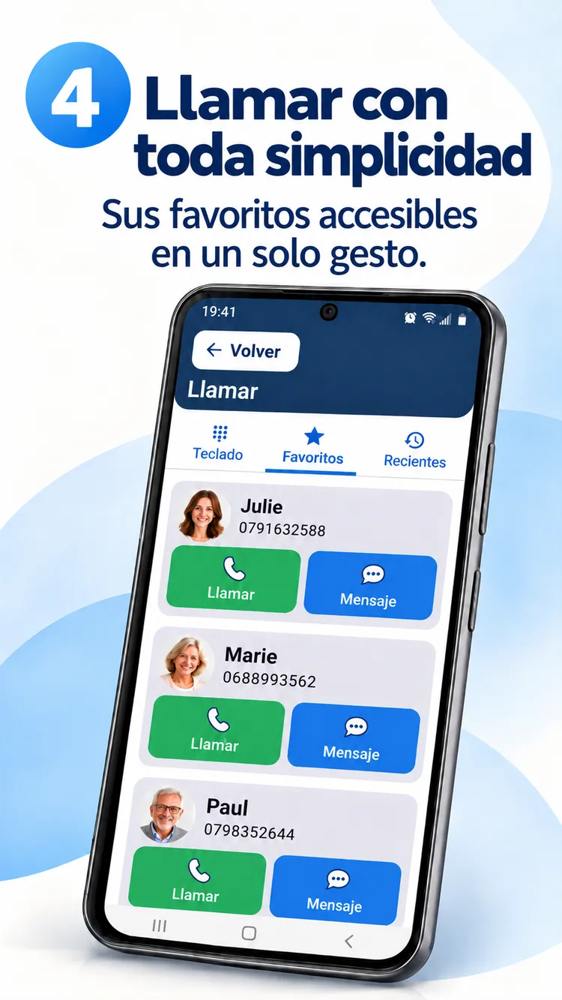
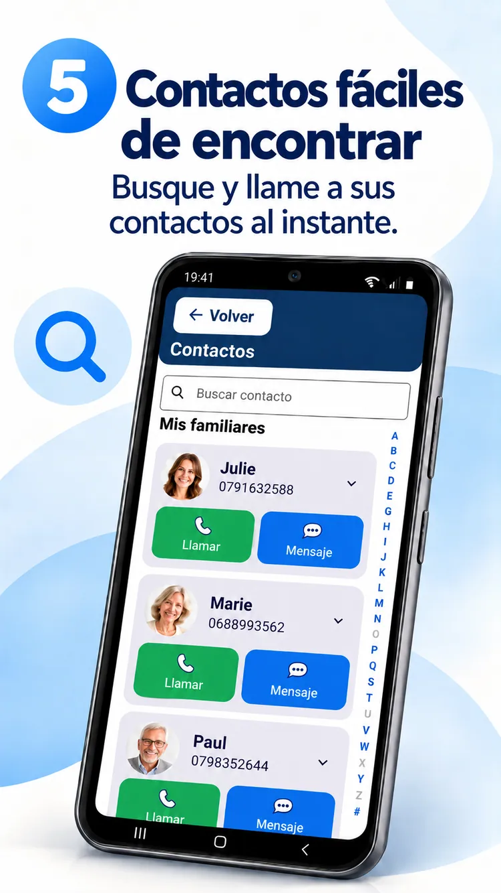
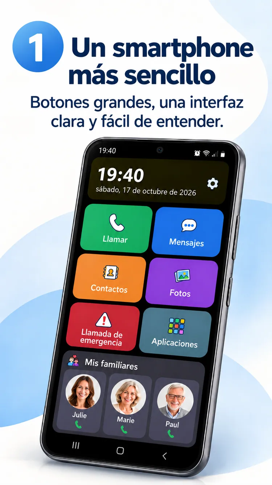

01
Una foto. Una llamada.
Tus seres queridos siempre cerca.


Una pantalla Android más fácil de usar, tus seres queridos cerca y más libertad para disfrutar de lo importante.
ClikoSpido convierte la pantalla de inicio de un Android compatible en un espacio claro, familiar y personalizable: menos dudas y más autonomía.
Controles grandes, acciones útiles y espacio para lo esencial.

Llamadas, mensajes, contactos, fotos, cámara y acceso de emergencia, a un toque.
Imagen promocional ilustrativa; la aplicación instalada puede variar.
Tus seres queridos siempre cerca.

Teclado grande y controles legibles.

Fotos y búsqueda alfabética.

Un familiar puede adaptar la pantalla, elegir las aplicaciones permitidas y proteger ajustes mediante PIN.
Descubre los ocho materiales promocionales en tu idioma.

Descubre ClikoSpido con un breve vídeo en tu idioma.
Reproducir vídeoRespuestas claras antes de empezar.
Sí, en teléfonos Android compatibles, como pantalla de inicio predeterminada.
No. Puedes simplificar un Android compatible que ya tengas.
No. Abre la aplicación de mensajes habitual para SMS, MMS y RCS.
No. Permite llamar a un contacto configurado y no sustituye los servicios de emergencia.
Una interfaz creada para simplificar las tareas diarias.
Volver al inicio